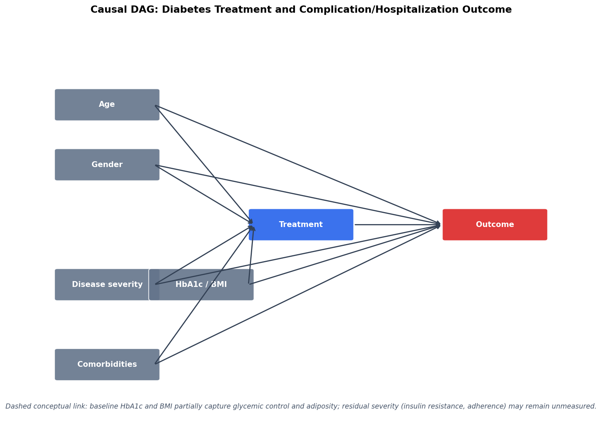
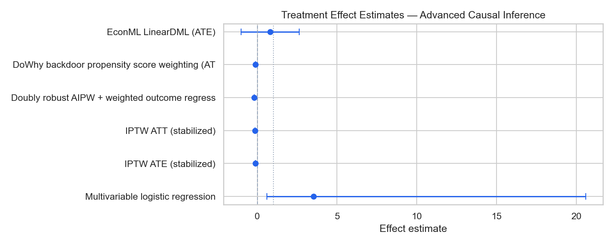
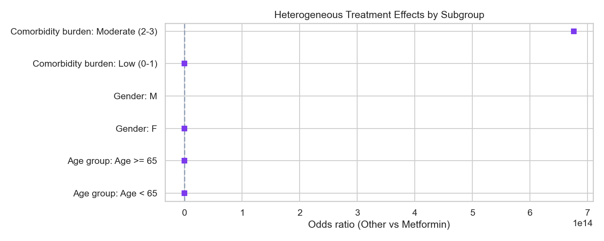
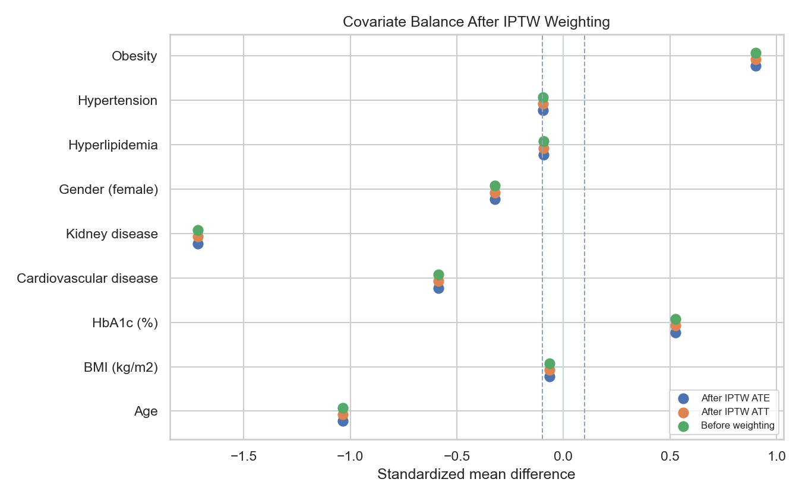

Step 7 — Regression, IPTW, Doubly Robust, Bootstrap, and HTE Analysis
Metformin users vs Other diabetes medication users | Full cohort N = 69 | Matched N = 16
Estimate the causal effect of diabetes pharmacotherapy (metformin vs other diabetes medications) on the composite outcome of diabetes-related complications or hospitalization using advanced observational causal inference methods appropriate for pharmaceutical real-world evidence.
What is the causal effect of diabetes treatment on clinical outcomes?
Treatment (Metformin vs Other) → Outcome (complication / hospitalization) Adjusted for: Age, Gender (female), HbA1c (%), BMI (kg/m2), Hypertension, Cardiovascular disease, Obesity, Hyperlipidemia, Kidney disease
The causal directed acyclic graph posits that age, gender, disease severity (partially unmeasured), and comorbidities confound the treatment–outcome relationship. Comorbidity burden proxies disease severity.
All baseline covariates were measured at or before treatment initiation (index date). Adjustment strategies include multivariable regression, propensity score IPTW (ATE and ATT), doubly robust AIPW, DoWhy backdoor identification, and EconML double machine learning.
| method | effect_measure | estimate | ci_lower | ci_upper | p_value | n | n_events | odds_ratio_other_vs_metformin | or_ci_lower | or_ci_upper | risk_metformin | risk_other |
|---|---|---|---|---|---|---|---|---|---|---|---|---|
| Multivariable logistic regression | Odds ratio (Other vs Metformin) | 3.5260 | 0.6040 | 20.5950 | 0.1617 | 69 | 55.0 | NaN | NaN | NaN | NaN | NaN |
| IPTW ATE (stabilized) | Risk difference (Metformin - Other) | -0.1291 | NaN | NaN | 0.2863 | 69 | NaN | 2.814 | 0.420 | 18.844 | 0.7796 | 0.9087 |
| IPTW ATT (stabilized) | Risk difference (Metformin - Other) | -0.1585 | NaN | NaN | 0.2391 | 69 | NaN | 3.431 | 0.441 | 26.714 | 0.7551 | 0.9136 |
| Doubly robust AIPW + weighted outcome regression | Average treatment effect (risk difference) | -0.1867 | NaN | NaN | 0.0436 | 69 | 55.0 | 7.865 | 1.061 | 58.299 | NaN | NaN |
| DoWhy backdoor propensity score weighting (ATE) | Average treatment effect (DoWhy value scale) | -0.1327 | NaN | NaN | NaN | 69 | NaN | NaN | NaN | NaN | NaN | NaN |
| EconML LinearDML (ATE) | Average treatment effect (probability scale) | 0.8030 | -1.0302 | 2.6362 | NaN | 69 | NaN | NaN | NaN | NaN | NaN | NaN |
| metric | n_bootstrap | estimate | ci_lower | ci_upper |
|---|---|---|---|---|
| IPTW ATE risk difference (bootstrap) | 500 | -0.1342 | -0.3017 | 0.0193 |
| subgroup_variable | subgroup_level | n | n_metformin | n_other | odds_ratio_other_vs_metformin | ci_lower | ci_upper | p_value | risk_metformin | risk_other |
|---|---|---|---|---|---|---|---|---|---|---|
| Age group | Age < 65 | 48 | 39 | 9 | 1.840000e+00 | 0.136 | 24.848 | 0.6461 | 0.718 | 0.889 |
| Age group | Age >= 65 | 21 | 10 | 11 | 5.350000e-01 | NaN | NaN | NaN | 0.900 | 0.909 |
| Gender | F | 37 | 24 | 13 | 0.000000e+00 | NaN | NaN | NaN | 0.708 | 0.923 |
| Gender | M | 32 | 25 | 7 | inf | NaN | NaN | NaN | 0.800 | 0.857 |
| Comorbidity burden | Low (0-1) | 16 | 14 | 2 | 0.000000e+00 | NaN | NaN | NaN | 0.786 | 0.500 |
| Comorbidity burden | Moderate (2-3) | 44 | 31 | 13 | 6.760578e+14 | NaN | NaN | NaN | 0.710 | 0.923 |
Results were re-estimated after sequentially omitting covariates, changing propensity score specifications, and varying 1:1 matching calipers. Estimates that remain directionally consistent support robustness; large shifts indicate sensitivity to modeling assumptions.
| analysis_type | specification | effect_estimate | p_value | reference_or | n_pairs |
|---|---|---|---|---|---|
| Drop-one covariate | Exclude Age | 3.2540 | 0.2031 | 3.526 | NaN |
| Drop-one covariate | Exclude Gender (female) | 3.3580 | 0.1838 | 3.526 | NaN |
| Drop-one covariate | Exclude HbA1c (%) | 2.4200 | 0.2667 | 3.526 | NaN |
| Drop-one covariate | Exclude BMI (kg/m2) | 1.5260 | 0.7691 | 3.526 | NaN |
| Drop-one covariate | Exclude Hypertension | 3.3250 | 0.1657 | 3.526 | NaN |
| Drop-one covariate | Exclude Cardiovascular disease | 3.5210 | 0.1617 | 3.526 | NaN |
| Drop-one covariate | Exclude Obesity | 1.2590 | 0.7714 | 3.526 | NaN |
| Drop-one covariate | Exclude Hyperlipidemia | 3.3480 | 0.1862 | 3.526 | NaN |
| Drop-one covariate | Exclude Kidney disease | 9.4030 | 0.0045 | 3.526 | NaN |
| Propensity model specification | Demographics only PS | -0.1418 | NaN | 3.526 | NaN |
| Propensity model specification | Comorbidities + labs (no demographics) | -0.1249 | NaN | 3.526 | NaN |
| Propensity model specification | Without baseline labs | 0.1058 | NaN | 3.526 | NaN |
| Propensity model specification | Full covariate PS | -0.1291 | NaN | 3.526 | NaN |
| Matching caliper | 1:1 NN caliper 0.1 SD | 0.1250 | NaN | 3.526 | 8.0 |
| Matching caliper | 1:1 NN caliper 0.2 SD | 0.1250 | NaN | 3.526 | 8.0 |
| Matching caliper | 1:1 NN caliper 0.3 SD | 0.1250 | NaN | 3.526 | 8.0 |



